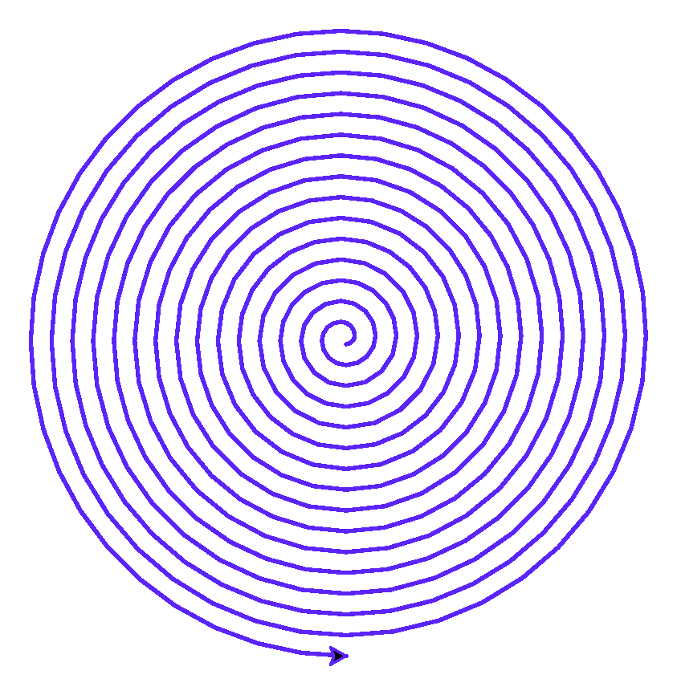
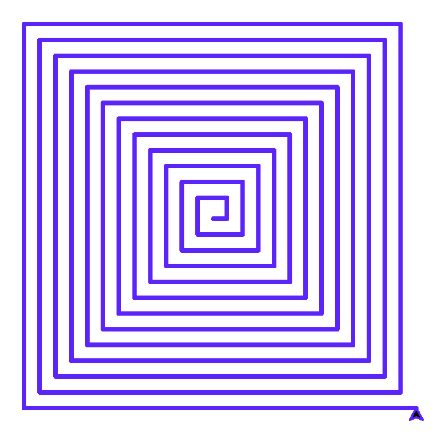

Глава 10 · Немного автоматизации!
Мини-проект — спирали из дуг
Завершаем главу узором, который меняется на каждом шаге цикла, — и подводим итоги.
Финальный мини-проект главы: спираль из дуг — каждая следующая дуга немного больше предыдущей.
spirali_iz_dug.py
radius = 5
for _ in range(60):
artist.circle(radius, 90) # дуга в четверть окружности
radius += 3 # каждый раз чуть большеspirali_iz_dug.py
import turtle
screen = turtle.Screen()
screen.setup(width=420, height=420)
artist = turtle.Turtle()
artist.speed(0)
artist.pencolor("#5B24F9")
artist.pensize(2)
radius = 5
for _ in range(60):
artist.circle(radius, 90)
radius += 3
screen.exitonclick()Результат выполнения

Изменение переменной внутри цикла — обычное дело
В отличие от предыдущих примеров, здесь
radius меняется на каждом шаге цикла — это и создаёт эффект нарастающей спирали, а не повторяющегося узора.break в Turtle — остановиться, не дойдя до конца
break прекрасно работает и внутри циклов, рисующих графику
— например, чтобы не выйти за границу экрана:
break_v_turtle.py
dlina = 10
for _ in range(50):
if artist.xcor() > 150:
break
artist.forward(dlina)
artist.left(90)
dlina += 6break_v_turtle.py
import turtle
screen = turtle.Screen()
screen.setup(width=420, height=420)
artist = turtle.Turtle()
artist.speed(0)
artist.pencolor("#5B24F9")
artist.pensize(3)
dlina = 10
for _ in range(50):
if artist.xcor() > 150:
break
artist.forward(dlina)
artist.left(90)
dlina += 6
screen.exitonclick()Результат выполнения

50 запланировано, но сработало меньше
Цикл был готов выполниться 50 раз, но фактически завершился раньше — как только условие
artist.xcor() > 150 стало истинным. Именно поэтому последний отрезок на картинке короче, чем должен был бы быть полный виток — break прервал рисование строго посередине шага.★★ Самостоятельная задача
Спираль из квадратов
Замените дугу на маленький квадрат (цикл на 4 стороны) внутри внешнего цикла — получится спираль из уменьшающихся или увеличивающихся квадратов.
Практика: спирали из дуг
Модуль turtle открывает нативное окно Python — выполните локально в VS Code, PyCharm или Jupyter
Практика выполняется локально
Практика: break в Turtle — квадратная спираль
Модуль turtle открывает нативное окно Python — выполните локально в VS Code, PyCharm или Jupyter
Практика выполняется локально
Итоги главы
Инструментарий циклов — на будущее
Итоговая шпаргалка главы 10
Число повторов известно заранее
→
for ... in range(n)
Перебор готовой последовательности (строка, список)
→
for элемент in последовательность
Нужен и индекс, и значение
→
for i, значение in enumerate(...)
Число повторов заранее неизвестно
→
while условие
Условие остановки удобнее проверить в середине тела
→
while True + break
Нужно узнать, был ли break
→
for/while … else
Нужно пропустить один шаг, не выходя из цикла
→
continue
Что мы узнали в этой главе
- Повторение — третья структура алгоритма после последовательности и ветвления (глава 9).
for ... in range(n)повторяет блок кода заданное число раз — цикл каждый раз спрашивает «есть следующий элемент?», а не выполняет тело N раз «по волшебству».range()не список, а генератор чисел; его stop не включается — та же логика, что и у срезов строк из главы 8.enumerate()даёт и индекс, и значение сразу; счётчик и накопитель — два базовых паттерна состояния внутри цикла.whileповторяет действие, пока условие остаётся истинным — используется, когда число повторов заранее неизвестно.breakпрерывает цикл полностью;continueпропускает текущий шаг; необязательныйelseу цикла срабатывает только без break.- Циклы можно вкладывать друг в друга — тогда внутренний цикл выполняется полностью на каждом шаге внешнего, а общее число итераций перемножается.
- Большинство ошибок циклов укладываются в десяток типовых сценариев — таблица трассировки, построенная вручную, помогает найти любой из них.
- Все фигуры из глав 6–7, нарисованные вручную, теперь можно записать в 2–4 строки с циклом — и мы увидели их реальные, по-настоящему выполненные результаты.
Что дальше
Мы уже видели циклы, которые работают со списками чисел — [4, 8, 15,
16, 23, 42]. В следующей главе разберём подробно, как устроены сами коллекции данных
— списки, кортежи, множества и словари — то, ради чего циклы в первую очередь и существуют
в реальных программах.